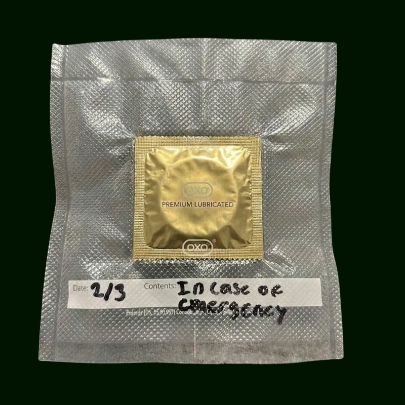

"For situations that escalated faster than expected."
Every responsible person claims they are prepared. Reality often runs on a different timeline.
Live monitoring of potential romantic encounters.
Estimated emergency condom usage across nightlife hubs.
Monitoring nightlife signals worldwide.
If the situation escalates unexpectedly, activate the emergency protocol.